<!doctype html>
<html lang="zh" class="no-js">
  <head>
    
      <meta charset="utf-8">
      <meta name="viewport" content="width=device-width,initial-scale=1">
      <meta http-equiv="x-ua-compatible" content="ie=edge">
      
      
        <link rel="canonical" href="https://docs.prometheus.cool/devops/jenkins/">
      
      
      
        <meta name="lang:clipboard.copy" content="复制">
      
        <meta name="lang:clipboard.copied" content="已复制">
      
        <meta name="lang:search.language" content="jp">
      
        <meta name="lang:search.pipeline.stopwords" content="True">
      
        <meta name="lang:search.pipeline.trimmer" content="True">
      
        <meta name="lang:search.result.none" content="没有找到符合条件的结果">
      
        <meta name="lang:search.result.one" content="找到 1 个符合条件的结果">
      
        <meta name="lang:search.result.other" content="# 个符合条件的结果">
      
        <meta name="lang:search.tokenizer" content="[\uff0c\u3002]+">
      
      <link rel="shortcut icon" href="../../assets/img/prometheus_logo.png">
      <meta name="generator" content="mkdocs-1.0.4, mkdocs-material-4.0.2">
    
    
      
        <title>Jenkins - 云原生监控神器Prometheus</title>
      
    
    
      <link rel="stylesheet" href="../../assets/stylesheets/application.982221ab.css">
      
        <link rel="stylesheet" href="../../assets/stylesheets/application-palette.224b79ff.css">
      
      
        
        
        <meta name="theme-color" content="#ef5350">
      
    
    
      <script src="../../assets/javascripts/modernizr.1f0bcf2b.js"></script>
    
    
      
        <link href="https://fonts.gstatic.com" rel="preconnect" crossorigin>
        <link rel="stylesheet" href="https://fonts.googleapis.com/css?family=Ubuntu:300,400,400i,700|Ubuntu+Mono">
        <style>body,input{font-family:"Ubuntu","Helvetica Neue",Helvetica,Arial,sans-serif}code,kbd,pre{font-family:"Ubuntu Mono","Courier New",Courier,monospace}</style>
      
    
    <link rel="stylesheet" href="../../assets/fonts/material-icons.css">
    
    
      <link rel="stylesheet" href="../../assets/styles/extra.css">
    
      <link rel="stylesheet" href="../../assets/styles/prism.css">
    
    
      
    
    
  </head>
  
    
    
    <body dir="ltr" data-md-color-primary="red" data-md-color-accent="red">
  
    <svg class="md-svg">
      <defs>
        
        
          <svg xmlns="http://www.w3.org/2000/svg" width="416" height="448"
    viewBox="0 0 416 448" id="__github">
  <path fill="currentColor" d="M160 304q0 10-3.125 20.5t-10.75 19-18.125
        8.5-18.125-8.5-10.75-19-3.125-20.5 3.125-20.5 10.75-19 18.125-8.5
        18.125 8.5 10.75 19 3.125 20.5zM320 304q0 10-3.125 20.5t-10.75
        19-18.125 8.5-18.125-8.5-10.75-19-3.125-20.5 3.125-20.5 10.75-19
        18.125-8.5 18.125 8.5 10.75 19 3.125 20.5zM360
        304q0-30-17.25-51t-46.75-21q-10.25 0-48.75 5.25-17.75 2.75-39.25
        2.75t-39.25-2.75q-38-5.25-48.75-5.25-29.5 0-46.75 21t-17.25 51q0 22 8
        38.375t20.25 25.75 30.5 15 35 7.375 37.25 1.75h42q20.5 0
        37.25-1.75t35-7.375 30.5-15 20.25-25.75 8-38.375zM416 260q0 51.75-15.25
        82.75-9.5 19.25-26.375 33.25t-35.25 21.5-42.5 11.875-42.875 5.5-41.75
        1.125q-19.5 0-35.5-0.75t-36.875-3.125-38.125-7.5-34.25-12.875-30.25-20.25-21.5-28.75q-15.5-30.75-15.5-82.75
        0-59.25 34-99-6.75-20.5-6.75-42.5 0-29 12.75-54.5 27 0 47.5 9.875t47.25
        30.875q36.75-8.75 77.25-8.75 37 0 70 8 26.25-20.5
        46.75-30.25t47.25-9.75q12.75 25.5 12.75 54.5 0 21.75-6.75 42 34 40 34
        99.5z" />
</svg>
        
      </defs>
    </svg>
    <input class="md-toggle" data-md-toggle="drawer" type="checkbox" id="__drawer" autocomplete="off">
    <input class="md-toggle" data-md-toggle="search" type="checkbox" id="__search" autocomplete="off">
    <label class="md-overlay" data-md-component="overlay" for="__drawer"></label>
    
      <a href="#jenkins" tabindex="1" class="md-skip">
        跳转至
      </a>
    
    
      <header class="md-header" data-md-component="header">
  <nav class="md-header-nav md-grid">
    <div class="md-flex">
      <div class="md-flex__cell md-flex__cell--shrink">
        <a href="https://docs.prometheus.cool" title="云原生监控神器Prometheus" class="md-header-nav__button md-logo">
          
            
          
        </a>
      </div>
      <div class="md-flex__cell md-flex__cell--shrink">
        <label class="md-icon md-icon--menu md-header-nav__button" for="__drawer"></label>
      </div>
      <div class="md-flex__cell md-flex__cell--stretch">
        <div class="md-flex__ellipsis md-header-nav__title" data-md-component="title">
          
            <span class="md-header-nav__topic">
              云原生监控神器Prometheus
            </span>
            <span class="md-header-nav__topic">
              Jenkins
            </span>
          
        </div>
      </div>
      <div class="md-flex__cell md-flex__cell--shrink">
        
          <label class="md-icon md-icon--search md-header-nav__button" for="__search"></label>
          
<div class="md-search" data-md-component="search" role="dialog">
  <label class="md-search__overlay" for="__search"></label>
  <div class="md-search__inner" role="search">
    <form class="md-search__form" name="search">
      <input type="text" class="md-search__input" name="query" placeholder="搜索" autocapitalize="off" autocorrect="off" autocomplete="off" spellcheck="false" data-md-component="query" data-md-state="active">
      <label class="md-icon md-search__icon" for="__search"></label>
      <button type="reset" class="md-icon md-search__icon" data-md-component="reset" tabindex="-1">
        &#xE5CD;
      </button>
    </form>
    <div class="md-search__output">
      <div class="md-search__scrollwrap" data-md-scrollfix>
        <div class="md-search-result" data-md-component="result">
          <div class="md-search-result__meta">
            键入以开始搜索
          </div>
          <ol class="md-search-result__list"></ol>
        </div>
      </div>
    </div>
  </div>
</div>
        
      </div>
      
        <div class="md-flex__cell md-flex__cell--shrink">
          <div class="md-header-nav__source">
            


  

<a href="https://github.com/k8stech/" title="前往 Github 仓库" class="md-source" data-md-source="github">
  
    <div class="md-source__icon">
      <svg viewBox="0 0 24 24" width="24" height="24">
        <use xlink:href="#__github" width="24" height="24"></use>
      </svg>
    </div>
  
  <div class="md-source__repository">
    GitHub
  </div>
</a>
          </div>
        </div>
      
    </div>
  </nav>
</header>
    
    <div class="md-container">
      
        
      
      
      <main class="md-main">
        <div class="md-main__inner md-grid" data-md-component="container">
          
            
              <div class="md-sidebar md-sidebar--primary" data-md-component="navigation">
                <div class="md-sidebar__scrollwrap">
                  <div class="md-sidebar__inner">
                    <nav class="md-nav md-nav--primary" data-md-level="0">
  <label class="md-nav__title md-nav__title--site" for="__drawer">
    <a href="https://docs.prometheus.cool" title="云原生监控神器Prometheus" class="md-nav__button md-logo">
      
        
      
    </a>
    云原生监控神器Prometheus
  </label>
  
    <div class="md-nav__source">
      


  

<a href="https://github.com/k8stech/" title="前往 Github 仓库" class="md-source" data-md-source="github">
  
    <div class="md-source__icon">
      <svg viewBox="0 0 24 24" width="24" height="24">
        <use xlink:href="#__github" width="24" height="24"></use>
      </svg>
    </div>
  
  <div class="md-source__repository">
    GitHub
  </div>
</a>
    </div>
  
  <ul class="md-nav__list" data-md-scrollfix>
    
      
      
      


  <li class="md-nav__item">
    <a href="../.." title="介绍" class="md-nav__link">
      介绍
    </a>
  </li>

    
      
      
      


  <li class="md-nav__item md-nav__item--nested">
    
      <input class="md-toggle md-nav__toggle" data-md-toggle="nav-2" type="checkbox" id="nav-2">
    
    <label class="md-nav__link" for="nav-2">
      监控基础与概述
    </label>
    <nav class="md-nav" data-md-component="collapsible" data-md-level="1">
      <label class="md-nav__title" for="nav-2">
        监控基础与概述
      </label>
      <ul class="md-nav__list" data-md-scrollfix>
        
        
          
          
          


  <li class="md-nav__item">
    <a href="../../monitorbasic/whymonitor/" title="为什么要监控" class="md-nav__link">
      为什么要监控
    </a>
  </li>

        
          
          
          


  <li class="md-nav__item">
    <a href="../../monitorbasic/monitorterms/" title="监控术语" class="md-nav__link">
      监控术语
    </a>
  </li>

        
          
          
          


  <li class="md-nav__item">
    <a href="../../monitorbasic/metricstory/" title="指标物语" class="md-nav__link">
      指标物语
    </a>
  </li>

        
          
          
          


  <li class="md-nav__item">
    <a href="../../monitorbasic/monitorcontrast/" title="开源监控对比" class="md-nav__link">
      开源监控对比
    </a>
  </li>

        
      </ul>
    </nav>
  </li>

    
      
      
      


  <li class="md-nav__item md-nav__item--nested">
    
      <input class="md-toggle md-nav__toggle" data-md-toggle="nav-3" type="checkbox" id="nav-3">
    
    <label class="md-nav__link" for="nav-3">
      Prometheus 基础
    </label>
    <nav class="md-nav" data-md-component="collapsible" data-md-level="1">
      <label class="md-nav__title" for="nav-3">
        Prometheus 基础
      </label>
      <ul class="md-nav__list" data-md-scrollfix>
        
        
          
          
          


  <li class="md-nav__item">
    <a href="../../basic/prom-introduction/" title="Prometheus介绍" class="md-nav__link">
      Prometheus介绍
    </a>
  </li>

        
          
          
          


  <li class="md-nav__item">
    <a href="../../basic/tsdb-contrast/" title="时序数据库对比" class="md-nav__link">
      时序数据库对比
    </a>
  </li>

        
          
          
          


  <li class="md-nav__item">
    <a href="../../basic/prom-datamodel/" title="数据模型" class="md-nav__link">
      数据模型
    </a>
  </li>

        
          
          
          


  <li class="md-nav__item">
    <a href="../../basic/node-exporter/" title="Node_Exporter" class="md-nav__link">
      Node_Exporter
    </a>
  </li>

        
          
          
          


  <li class="md-nav__item">
    <a href="../../basic/prom-config/" title="Prometheus安装与配置" class="md-nav__link">
      Prometheus安装与配置
    </a>
  </li>

        
      </ul>
    </nav>
  </li>

    
      
      
      


  <li class="md-nav__item md-nav__item--nested">
    
      <input class="md-toggle md-nav__toggle" data-md-toggle="nav-4" type="checkbox" id="nav-4">
    
    <label class="md-nav__link" for="nav-4">
      Prometheus 进阶
    </label>
    <nav class="md-nav" data-md-component="collapsible" data-md-level="1">
      <label class="md-nav__title" for="nav-4">
        Prometheus 进阶
      </label>
      <ul class="md-nav__list" data-md-scrollfix>
        
        
          
          
          


  <li class="md-nav__item">
    <a href="../../advanced/auto-ops-exporter-1/" title="自动化维护Exporter（一）" class="md-nav__link">
      自动化维护Exporter（一）
    </a>
  </li>

        
          
          
          


  <li class="md-nav__item">
    <a href="../../advanced/auto-ops-exporter-2/" title="自动化维护Exporter（二）" class="md-nav__link">
      自动化维护Exporter（二）
    </a>
  </li>

        
          
          
          


  <li class="md-nav__item">
    <a href="../../advanced/docker-swarm-monitor-1/" title="Docker-Swarm集群监控（一）" class="md-nav__link">
      Docker-Swarm集群监控（一）
    </a>
  </li>

        
          
          
          


  <li class="md-nav__item">
    <a href="../../advanced/docker-swarm-monitor-2/" title="Docker-Swarm集群监控（二）" class="md-nav__link">
      Docker-Swarm集群监控（二）
    </a>
  </li>

        
          
          
          


  <li class="md-nav__item">
    <a href="../../advanced/commonly-exporter/" title="常用Exporter介绍与配置" class="md-nav__link">
      常用Exporter介绍与配置
    </a>
  </li>

        
      </ul>
    </nav>
  </li>

    
      
      
      


  <li class="md-nav__item md-nav__item--nested">
    
      <input class="md-toggle md-nav__toggle" data-md-toggle="nav-5" type="checkbox" id="nav-5">
    
    <label class="md-nav__link" for="nav-5">
      Prometheus(警报)
    </label>
    <nav class="md-nav" data-md-component="collapsible" data-md-level="1">
      <label class="md-nav__title" for="nav-5">
        Prometheus(警报)
      </label>
      <ul class="md-nav__list" data-md-scrollfix>
        
        
          
          
          


  <li class="md-nav__item">
    <a href="../../Alertmanager/promql-basic/" title="PromQL详解（一）" class="md-nav__link">
      PromQL详解（一）
    </a>
  </li>

        
          
          
          


  <li class="md-nav__item">
    <a href="../../Alertmanager/promql-operator/" title="PromQL详解（二）" class="md-nav__link">
      PromQL详解（二）
    </a>
  </li>

        
          
          
          


  <li class="md-nav__item">
    <a href="../../Alertmanager/promql-operator2/" title="PromQL详解（三）" class="md-nav__link">
      PromQL详解（三）
    </a>
  </li>

        
          
          
          


  <li class="md-nav__item">
    <a href="../../Alertmanager/promql-function/" title="PromQL函数" class="md-nav__link">
      PromQL函数
    </a>
  </li>

        
          
          
          


  <li class="md-nav__item">
    <a href="../../Alertmanager/alertmanager-overview/" title="AlertManager" class="md-nav__link">
      AlertManager
    </a>
  </li>

        
          
          
          


  <li class="md-nav__item">
    <a href="../../Alertmanager/alertmanager-rules-1/" title="Rules详解（一）" class="md-nav__link">
      Rules详解（一）
    </a>
  </li>

        
          
          
          


  <li class="md-nav__item">
    <a href="../../Alertmanager/alertmanager-rules-2/" title="Rules详解（二）" class="md-nav__link">
      Rules详解（二）
    </a>
  </li>

        
          
          
          


  <li class="md-nav__item">
    <a href="../../Alertmanager/alertmanager-receiver/" title="Receiver配置" class="md-nav__link">
      Receiver配置
    </a>
  </li>

        
          
          
          


  <li class="md-nav__item">
    <a href="../../Alertmanager/alertmanager-silences/" title="Silences配置" class="md-nav__link">
      Silences配置
    </a>
  </li>

        
      </ul>
    </nav>
  </li>

    
      
      
      


  <li class="md-nav__item md-nav__item--nested">
    
      <input class="md-toggle md-nav__toggle" data-md-toggle="nav-6" type="checkbox" id="nav-6">
    
    <label class="md-nav__link" for="nav-6">
      Prometheus(联邦集群)
    </label>
    <nav class="md-nav" data-md-component="collapsible" data-md-level="1">
      <label class="md-nav__title" for="nav-6">
        Prometheus(联邦集群)
      </label>
      <ul class="md-nav__list" data-md-scrollfix>
        
        
          
          
          


  <li class="md-nav__item">
    <a href="../../federation/federation-overview/" title="Prometheus 联邦集群" class="md-nav__link">
      Prometheus 联邦集群
    </a>
  </li>

        
          
          
          


  <li class="md-nav__item">
    <a href="../../federation/pushgateway/" title="Pushgateway 代理" class="md-nav__link">
      Pushgateway 代理
    </a>
  </li>

        
          
          
          


  <li class="md-nav__item">
    <a href="../../federation/alertmanager-ha/" title="Alertmanager 高可用" class="md-nav__link">
      Alertmanager 高可用
    </a>
  </li>

        
      </ul>
    </nav>
  </li>

    
      
      
      


  <li class="md-nav__item md-nav__item--nested">
    
      <input class="md-toggle md-nav__toggle" data-md-toggle="nav-7" type="checkbox" id="nav-7">
    
    <label class="md-nav__link" for="nav-7">
      Prometheus(服务发现)
    </label>
    <nav class="md-nav" data-md-component="collapsible" data-md-level="1">
      <label class="md-nav__title" for="nav-7">
        Prometheus(服务发现)
      </label>
      <ul class="md-nav__list" data-md-scrollfix>
        
        
          
          
          


  <li class="md-nav__item">
    <a href="../../discover-service/discovery-overview/" title="服务发现（文件、DNS）" class="md-nav__link">
      服务发现（文件、DNS）
    </a>
  </li>

        
          
          
          


  <li class="md-nav__item">
    <a href="../../discover-service/discovery-relabeling/" title="服务发现（Relabelling）" class="md-nav__link">
      服务发现（Relabelling）
    </a>
  </li>

        
          
          
          


  <li class="md-nav__item">
    <a href="../../discover-service/discovery-consul/" title="服务发现（Consul）" class="md-nav__link">
      服务发现（Consul）
    </a>
  </li>

        
      </ul>
    </nav>
  </li>

    
      
      
      


  <li class="md-nav__item md-nav__item--nested">
    
      <input class="md-toggle md-nav__toggle" data-md-toggle="nav-8" type="checkbox" id="nav-8">
    
    <label class="md-nav__link" for="nav-8">
      Prometheus(Operator)
    </label>
    <nav class="md-nav" data-md-component="collapsible" data-md-level="1">
      <label class="md-nav__title" for="nav-8">
        Prometheus(Operator)
      </label>
      <ul class="md-nav__list" data-md-scrollfix>
        
        
          
          
          


  <li class="md-nav__item">
    <a href="../../Kubernetes/Prometheus-Operator/" title="Operator概述" class="md-nav__link">
      Operator概述
    </a>
  </li>

        
          
          
          


  <li class="md-nav__item">
    <a href="../../Kubernetes/Prometheus-Statefulsets-1/" title="手动部署（1）" class="md-nav__link">
      手动部署（1）
    </a>
  </li>

        
          
          
          


  <li class="md-nav__item">
    <a href="../../Kubernetes/Prometheus-Statefulsets-2/" title="手动部署（2）" class="md-nav__link">
      手动部署（2）
    </a>
  </li>

        
          
          
          


  <li class="md-nav__item">
    <a href="../../Kubernetes/Prometheus-Statefulsets-3/" title="手动部署（联邦）" class="md-nav__link">
      手动部署（联邦）
    </a>
  </li>

        
      </ul>
    </nav>
  </li>

    
  </ul>
</nav>
                  </div>
                </div>
              </div>
            
            
              <div class="md-sidebar md-sidebar--secondary" data-md-component="toc">
                <div class="md-sidebar__scrollwrap">
                  <div class="md-sidebar__inner">
                    
<nav class="md-nav md-nav--secondary">
  
  
    
  
  
    <label class="md-nav__title" for="__toc">目录</label>
    <ul class="md-nav__list" data-md-scrollfix>
      
        <li class="md-nav__item">
  <a href="#_1" title="安装" class="md-nav__link">
    安装
  </a>
  
</li>
      
        <li class="md-nav__item">
  <a href="#_2" title="架构" class="md-nav__link">
    架构
  </a>
  
</li>
      
        <li class="md-nav__item">
  <a href="#_3" title="配置" class="md-nav__link">
    配置
  </a>
  
</li>
      
        <li class="md-nav__item">
  <a href="#_4" title="测试" class="md-nav__link">
    测试
  </a>
  
</li>
      
        <li class="md-nav__item">
  <a href="#jenkins-pipeline" title="Jenkins Pipeline" class="md-nav__link">
    Jenkins Pipeline
  </a>
  
    <nav class="md-nav">
      <ul class="md-nav__list">
        
          <li class="md-nav__item">
  <a href="#slave" title="在 Slave 中构建任务" class="md-nav__link">
    在 Slave 中构建任务
  </a>
  
</li>
        
          <li class="md-nav__item">
  <a href="#kubernetes" title="部署 Kubernetes 应用" class="md-nav__link">
    部署 Kubernetes 应用
  </a>
  
    <nav class="md-nav">
      <ul class="md-nav__list">
        
          <li class="md-nav__item">
  <a href="#pipeline" title="Pipeline" class="md-nav__link">
    Pipeline
  </a>
  
</li>
        
      </ul>
    </nav>
  
</li>
        
      </ul>
    </nav>
  
</li>
      
      
      
      
      
    </ul>
  
</nav>
                  </div>
                </div>
              </div>
            
          
          <div class="md-content">
            <article class="md-content__inner md-typeset">
              
                
                  <a href="https://github.com/k8stech/edit/master/docs/devops/jenkins.md" title="编辑此页" class="md-icon md-content__icon">&#xE3C9;</a>
                
                
                <h1 id="jenkins">Jenkins<a class="headerlink" href="#jenkins" title="Permanent link">&para;</a></h1>
<p>提到基于 Kubernete 的CI/CD，可以使用的工具有很多，比如 Jenkins、Gitlab CI 以及新兴的 drone 之类的，我们这里会使用大家最为熟悉的 Jenkins 来做 CI/CD 的工具。</p>
<h2 id="_1">安装<a class="headerlink" href="#_1" title="Permanent link">&para;</a></h2>
<p>既然要基于 Kubernetes 来做 CI/CD，我们这里最好还是将 Jenkins 安装到 Kubernetes 集群当中，安装的方式也很多，我们这里仍然还是使用手动的方式，这样可以了解更多细节，对应的资源清单文件如下所示：
<pre class="highlight"><code class="language-yaml">apiVersion: v1
kind: ServiceAccount
metadata:
  name: jenkins
  namespace: kube-ops
---
kind: ClusterRole
apiVersion: rbac.authorization.k8s.io/v1beta1
metadata:
  name: jenkins
rules:
  - apiGroups: ["extensions", "apps"]
    resources: ["deployments"]
    verbs: ["create", "delete", "get", "list", "watch", "patch", "update"]
  - apiGroups: [""]
    resources: ["services"]
    verbs: ["create", "delete", "get", "list", "watch", "patch", "update"]
  - apiGroups: [""]
    resources: ["pods"]
    verbs: ["create","delete","get","list","patch","update","watch"]
  - apiGroups: [""]
    resources: ["pods/exec"]
    verbs: ["create","delete","get","list","patch","update","watch"]
  - apiGroups: [""]
    resources: ["pods/log"]
    verbs: ["get","list","watch"]
  - apiGroups: [""]
    resources: ["secrets"]
    verbs: ["get"]
---
apiVersion: rbac.authorization.k8s.io/v1beta1
kind: ClusterRoleBinding
metadata:
  name: jenkins
  namespace: kube-ops
roleRef:
  apiGroup: rbac.authorization.k8s.io
  kind: ClusterRole
  name: jenkins
subjects:
  - kind: ServiceAccount
    name: jenkins
    namespace: kube-ops
---
apiVersion: apps/v1
kind: Deployment
metadata:
  name: jenkins
  namespace: kube-ops
spec:
  selector:
    matchLabels:
      app: jenkins
  template:
    metadata:
      labels:
        app: jenkins
    spec:
      terminationGracePeriodSeconds: 10
      serviceAccount: jenkins
      initContainers:
      - name: fix-permissions
        image: busybox
        command: ["sh", "-c", "chown -R 1000:1000 /var/jenkins_home"]
        securityContext:
          privileged: true
        volumeMounts:
        - name: jenkinshome
          mountPath: /var/jenkins_home
      containers:
      - name: jenkins
        image: jenkins/jenkins:lts
        imagePullPolicy: IfNotPresent
        ports:
        - containerPort: 8080
          name: web
          protocol: TCP
        - containerPort: 50000
          name: agent
          protocol: TCP
        resources:
          limits:
            cpu: 1000m
          requests:
            cpu: 100m
        readinessProbe:
          httpGet:
            path: /login
            port: 8080
          initialDelaySeconds: 60
          timeoutSeconds: 5
          failureThreshold: 12
        volumeMounts:
        - name: jenkinshome
          mountPath: /var/jenkins_home
      nodeSelector:
        kubernetes.io/hostname: ydzs-node1
      volumes:
      - name: jenkinshome
        hostPath:
          path: /data/k8s/jenkins
---
apiVersion: v1
kind: Service
metadata:
  name: jenkins
  namespace: kube-ops
  labels:
    app: jenkins
spec:
  selector:
    app: jenkins
  ports:
  - name: web
    port: 8080
    targetPort: web
  - name: agent
    port: 50000
    targetPort: agent
---
apiVersion: extensions/v1beta1
kind: Ingress
metadata:
  name: jenkins
  namespace: kube-ops
spec:
  rules:
  - host: jenkins.k8s.local
    http:
      paths:
      - backend:
          serviceName: jenkins
          servicePort: web</code></pre></p>
<p>我们这里使用一个名为 <code>jenkins/jenkins:lts</code> 的镜像，这是 jenkins 官方的 Docker 镜像，然后也有一些环境变量，当然我们也可以根据自己的需求来定制一个镜像，比如我们可以将一些插件打包在自定义的镜像当中，可以参考文档：<a href="https://github.com/jenkinsci/docker">https://github.com/jenkinsci/docker</a>，我们这里使用默认的官方镜像就行，另外一个还需要注意的数据的持久化，将容器的 <code>/var/jenkins_home</code> 目录持久化即可，同样为了性能考虑，我们这里还是使用 <code>hostPath</code> 的形式，所以用一个 <code>nodeSelector</code> 固定到一个节点上，当然使用 PV/PVC/StorageClass 也是可以的。</p>
<p>由于我们这里使用的镜像内部运行的用户 uid=1000，所以我们这里挂载出来后会出现权限问题，为解决这个问题，我们同样还是用一个简单的 initContainer 来修改下我们挂载的数据目录。</p>
<p>另外我们这里还需要使用到一个拥有相关权限的 <code>serviceAccount：jenkins</code>，我们这里只是给 jenkins 赋予了一些必要的权限，当然如果你对 serviceAccount 的权限不是很熟悉的话，我们给这个 sa 绑定一个 <code>cluster-admin</code> 的集群角色权限也是可以的，当然这样具有一定的安全风险。最后就是通过 Ingress 来暴露我们的服务，这个比较简单。</p>
<p>我们直接来创建 jenkins 的资源清单即可：
<pre class="highlight"><code class="language-shell">$ kubectl apply -f jenkins.yaml
$ kubectl get pods -n kube-ops -l app=jenkins         
NAME                       READY   STATUS    RESTARTS   AGE
jenkins-68ccff445c-5t2wp   1/1     Running   0          3m10s
$ kubectl logs -f jenkins-68ccff445c-5t2wp -n kube-ops
......
2019-12-16 13:26:03.756+0000 [id=39]    INFO    hudson.model.AsyncPeriodicWork$1#run: Finished Download metadata. 28,073 ms
2019-12-16 13:26:03.760+0000 [id=26]    INFO    jenkins.InitReactorRunner$1#onAttained: Completed initialization
2019-12-16 13:26:03.863+0000 [id=19]    INFO    hudson.WebAppMain$3#run: Jenkins is fully up and running</code></pre></p>
<p>看到上面的 <code>run: Jenkins is fully up and running</code> 信息就证明我们的 Jenkins 应用以前启动起来了。</p>
<p>然后我们可以通过 Ingress 中定义的域名 <code>jenkins.k8s.local</code>(需要做 DNS 解析或者在本地 <code>/etc/hosts</code> 中添加映射)来访问 jenkins 服务：</p>
<p>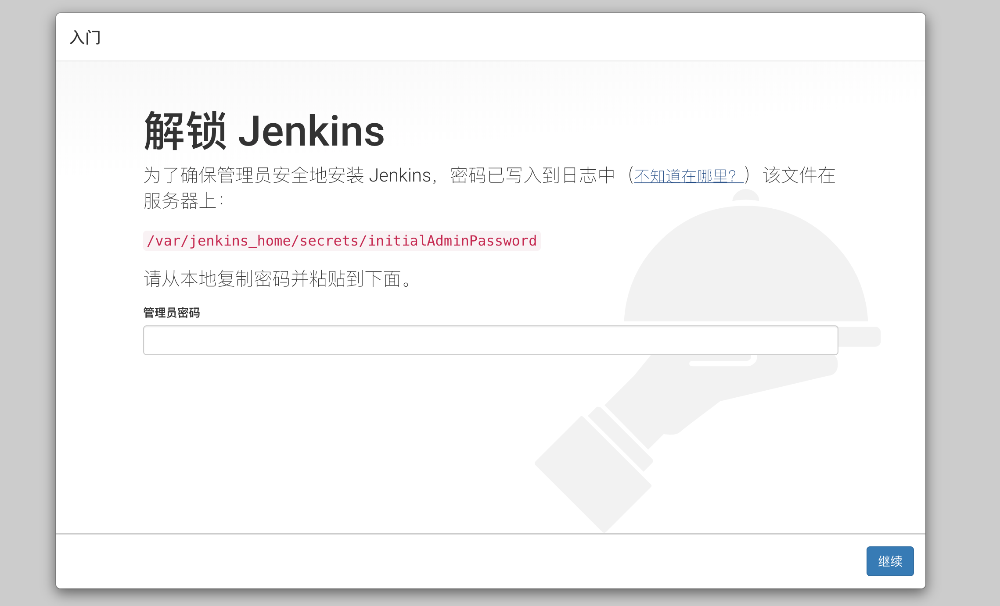</p>
<p>然后可以执行下面的命令获取解锁的管理员密码：
<pre class="highlight"><code class="language-shell">$ kubectl exec jenkins-68ccff445c-5t2wp -n kube-ops cat /var/jenkins_home/secrets/initialAdminPassword
35b083de1d25409eaef57255e0da481a   # jenkins启动日志里面也有</code></pre></p>
<p>然后选择安装推荐的插件即可，由于默认的插件地址安装非常慢，我们可以替换成国内清华的源，进入 jenkins 工作目录，目录下面有一个 <code>updates</code> 的目录，下面有一个 <code>default.json</code> 文件，我们执行下面的命令替换插件地址：
<pre class="highlight"><code class="language-shell">$ sed -i 's/http:\/\/updates.jenkins-ci.org\/download/https:\/\/mirrors.tuna.tsinghua.edu.cn\/jenkins/g' default.json &amp;&amp; sed -i 's/http:\/\/www.google.com/https:\/\/www.baidu.com/g' default.json</code></pre></p>
<p>替换完成后，需要重启 Jenkins，我们这里当然就是重建 Pod 即可，然后再安装插件就非常快了。</p>
<p>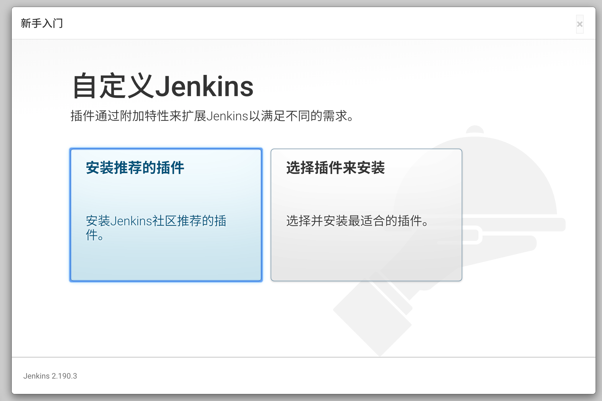</p>
<p>安装完成后添加管理员帐号即可进入到 jenkins 主界面：</p>
<p>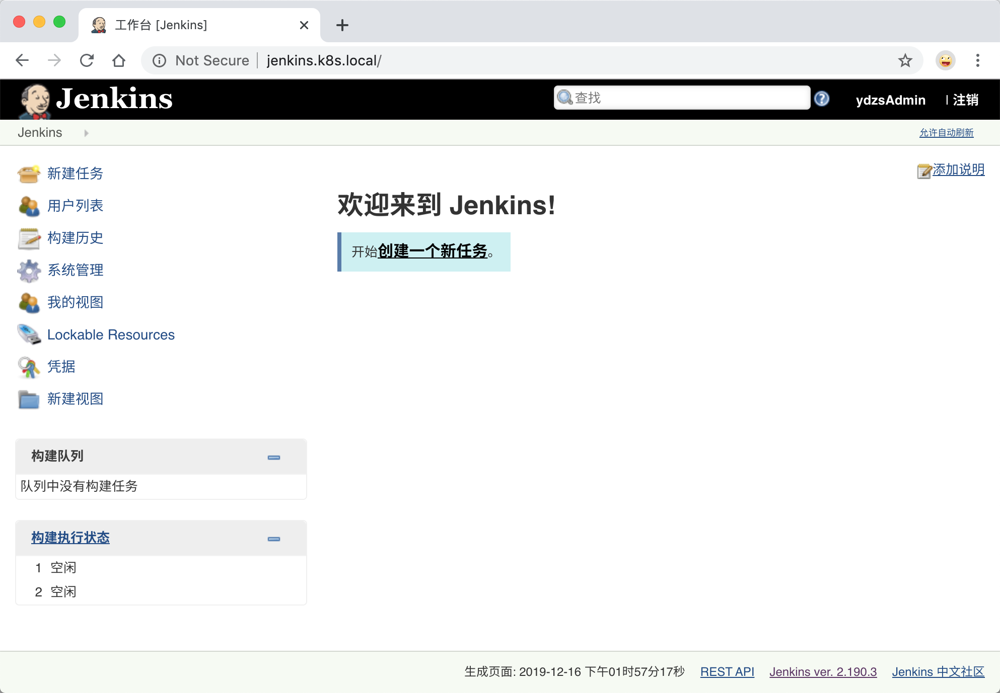</p>
<h2 id="_2">架构<a class="headerlink" href="#_2" title="Permanent link">&para;</a></h2>
<p>Jenkins 安装完成了，接下来我们不用急着就去使用，我们要了解下在 Kubernetes 环境下面使用 Jenkins 有什么好处。</p>
<p>我们知道持续构建与发布是我们日常工作中必不可少的一个步骤，目前大多公司都采用 Jenkins 集群来搭建符合需求的 CI/CD 流程，然而传统的 Jenkins Slave 一主多从方式会存在一些痛点，比如：</p>
<ul>
<li>主 Master 发生单点故障时，整个流程都不可用了</li>
<li>每个 Slave 的配置环境不一样，来完成不同语言的编译打包等操作，但是这些差异化的配置导致管理起来非常不方便，维护起来也是比较费劲</li>
<li>资源分配不均衡，有的 Slave 要运行的 job 出现排队等待，而有的 Slave 处于空闲状态</li>
<li>资源有浪费，每台 Slave 可能是物理机或者虚拟机，当 Slave 处于空闲状态时，也不会完全释放掉资源。</li>
</ul>
<p>正因为上面的这些种种痛点，我们渴望一种更高效更可靠的方式来完成这个 CI/CD 流程，而 Docker 虚拟化容器技术能很好的解决这个痛点，又特别是在 Kubernetes 集群环境下面能够更好来解决上面的问题，下图是基于 Kubernetes 搭建 Jenkins 集群的简单示意图： </p>
<p></p>
<p>从图上可以看到 <code>Jenkins Master</code> 和 <code>Jenkins Slave</code> 以 Pod 形式运行在 Kubernetes 集群的 Node 上，Master 运行在其中一个节点，并且将其配置数据存储到一个 Volume 上去，Slave 运行在各个节点上，并且它不是一直处于运行状态，它会按照需求动态的创建并自动删除。</p>
<p>这种方式的工作流程大致为：当 Jenkins Master 接受到 Build 请求时，会根据配置的 Label 动态创建一个运行在 Pod 中的 Jenkins Slave 并注册到 Master 上，当运行完 Job 后，这个 Slave 会被注销并且这个 Pod 也会自动删除，恢复到最初状态。</p>
<p>那么我们使用这种方式带来了哪些好处呢？</p>
<ul>
<li><strong>服务高可用</strong>，当 Jenkins Master 出现故障时，Kubernetes 会自动创建一个新的 Jenkins Master 容器，并且将 Volume 分配给新创建的容器，保证数据不丢失，从而达到集群服务高可用。</li>
<li><strong>动态伸缩</strong>，合理使用资源，每次运行 Job 时，会自动创建一个 Jenkins Slave，Job 完成后，Slave 自动注销并删除容器，资源自动释放，而且 Kubernetes 会根据每个资源的使用情况，动态分配 Slave 到空闲的节点上创建，降低出现因某节点资源利用率高，还排队等待在该节点的情况。</li>
<li><strong>扩展性好</strong>，当 Kubernetes 集群的资源严重不足而导致 Job 排队等待时，可以很容易的添加一个 Kubernetes Node 到集群中，从而实现扩展。
是不是以前我们面临的种种问题在 Kubernetes 集群环境下面是不是都没有了啊？看上去非常完美。</li>
</ul>
<h2 id="_3">配置<a class="headerlink" href="#_3" title="Permanent link">&para;</a></h2>
<p>接下来我们就需要来配置 Jenkins，让他能够动态的生成 Slave 的 Pod。</p>
<p>第1步. 我们需要安装 <a href="https://github.com/jenkinsci/kubernetes-plugin">kubernetes 插件</a>， 点击 Manage Jenkins -&gt; Manage Plugins -&gt; Available -&gt; Kubernetes 勾选安装即可。 </p>
<p>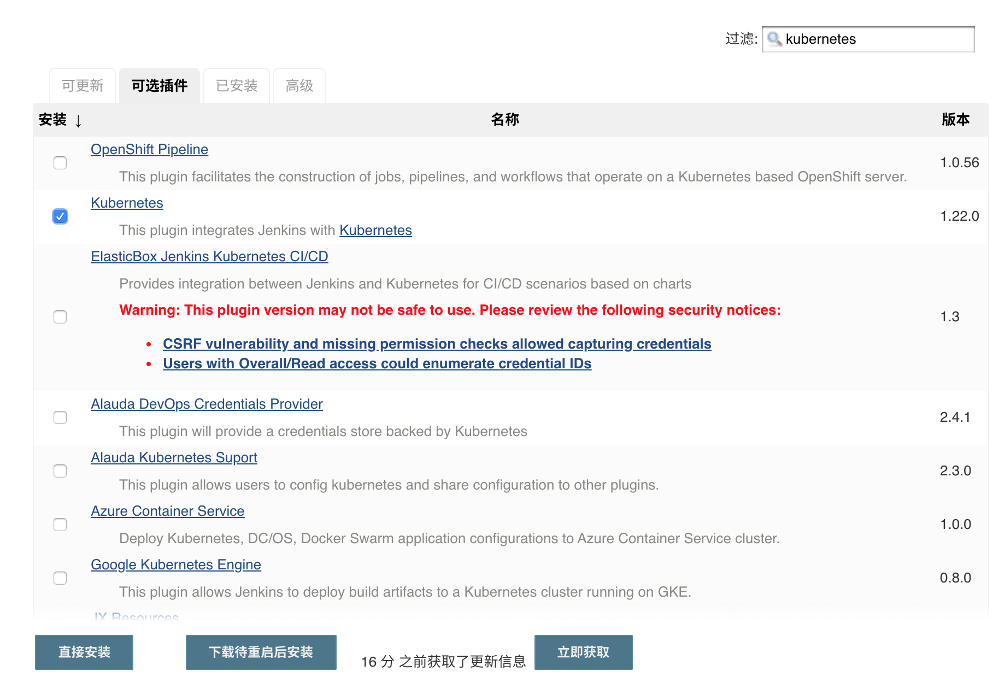</p>
<p>第2步. 安装完毕后，点击 Manage Jenkins —&gt; Configure System —&gt; (拖到最下方)Add a new cloud —&gt; 选择 Kubernetes，然后填写 Kubernetes 和 Jenkins 配置信息。 </p>
<p>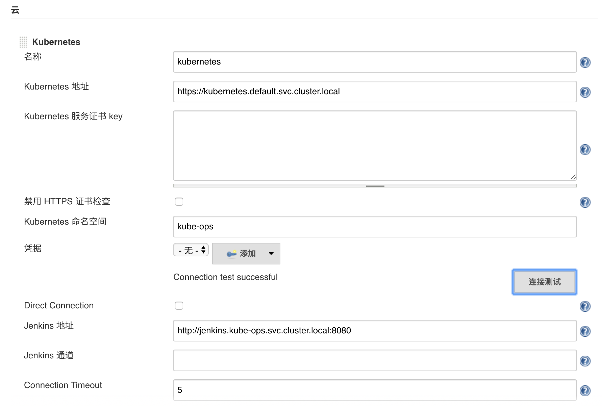</p>
<p>注意 namespace，我们这里填 kube-ops，然后点击 Test Connection，如果出现 <code>Connection test successful</code> 的提示信息证明 Jenkins 已经可以和 Kubernetes 系统正常通信了，然后下方的 Jenkins URL 地址：<code>http://jenkins.kube-ops.svc.cluster.local:8080</code>，这里的格式为：<code>服务名.namespace.svc.cluster.local:8080</code>，根据上面创建的 jenkins 的服务名填写。</p>
<p>第3步. 配置 <code>Pod Template</code>，其实就是配置 Jenkins Slave 运行的 Pod 模板，命名空间我们同样是用 kube-ops，Labels 这里也非常重要，对于后面执行 Job 的时候需要用到该值，然后我们这里使用的是 <code>cnych/jenkins:jnlp6</code> 这个镜像，这个镜像是在官方的 jnlp 镜像基础上定制的，加入了 docker、kubectl 等一些实用的工具。</p>
<p>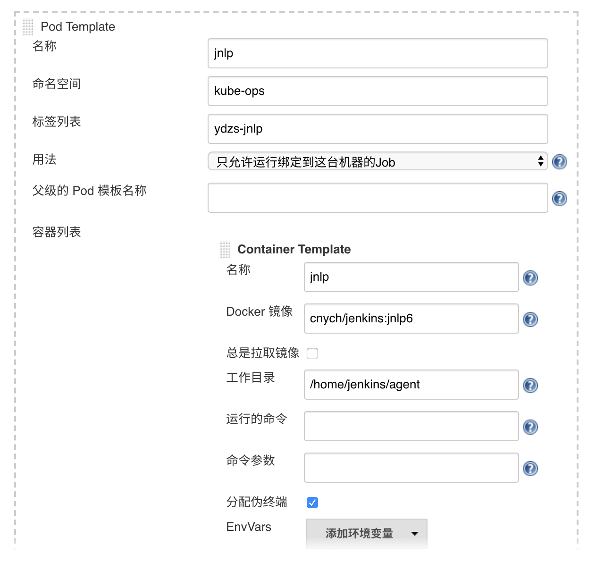</p>
<div class="admonition warning">
<p class="admonition-title">注意</p>
<p>容器的名称必须是 jnlp，这是默认拉起的容器，另外需要将 <code>Command to run</code> 和 <code>Arguments to pass to the command</code> 的值都删除掉，否则会失败。</p>
</div>
<p>然后我们这里需要在下面挂载两个主机目录，一个是 <code>/var/run/docker.sock</code>，该文件是用于 Pod 中的容器能够共享宿主机的 Docker，这就是大家说的 <code>docker in docker</code> 的方式，Docker 二进制文件已经打包到上面的镜像中了，另外一个目录下 <code>/root/.kube</code> 目录，我们将这个目录挂载到容器的 <code>/root/.kube</code> 目录下面这是为了让我们能够在 Pod 的容器中能够使用 <code>kubectl</code> 工具来访问我们的 Kubernetes 集群，方便我们后面在 <code>Slave Pod</code> 部署 Kubernetes 应用。</p>
<p>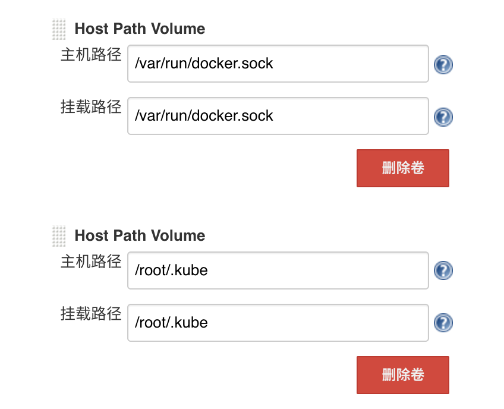</p>
<p>另外如果在配置了后运行 Slave Pod 的时候出现了权限问题，这是因为 Jenkins Slave Pod 中没有配置权限，所以需要配置上 ServiceAccount，在 Slave Pod 配置的地方点击下面的高级，添加上对应的 ServiceAccount 即可：</p>
<p>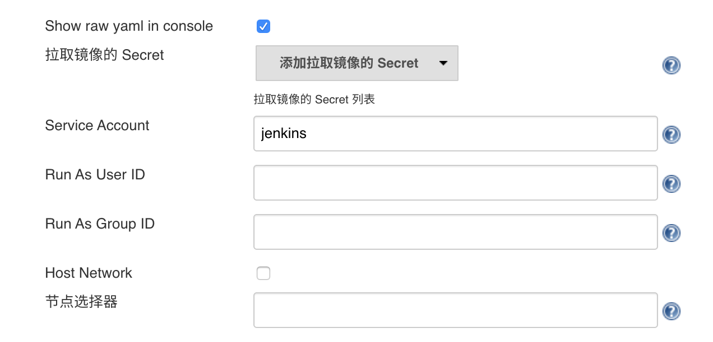</p>
<p>到这里我们的 Kubernetes 插件就算配置完成了。</p>
<h2 id="_4">测试<a class="headerlink" href="#_4" title="Permanent link">&para;</a></h2>
<p>Kubernetes 插件的配置工作完成了，接下来我们就来添加一个 Job 任务，看是否能够在 Slave Pod 中执行，任务执行完成后看 Pod 是否会被销毁。</p>
<p>在 Jenkins 首页点击 <code>create new jobs</code>，创建一个测试的任务，输入任务名称，然后我们选择 <code>Freestyle project</code> 类型的任务，注意在下面的 <code>Label Expression</code> 这里要填入 <code>ydzs-jnlp</code>，就是前面我们配置的 Slave Pod 中的 Label，这两个地方必须保持一致：</p>
<p>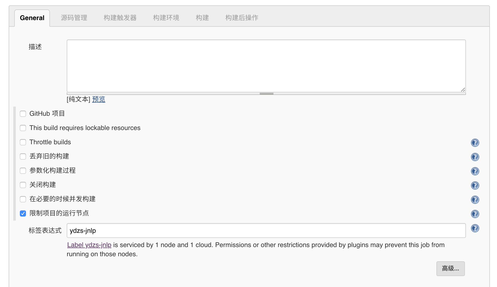</p>
<p>然后往下拉，在 Build 区域选择<code>Execute shell</code></p>
<p>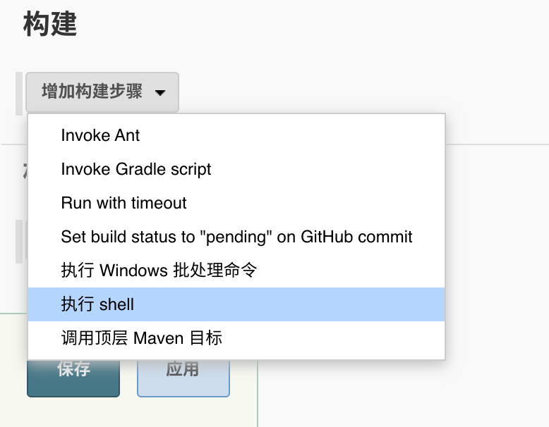</p>
<p>然后输入我们测试命令
<pre class="highlight"><code class="language-shell">echo "测试 Kubernetes 动态生成 jenkins slave"
echo "==============docker in docker==========="
docker info

echo "=============kubectl============="
kubectl get pods</code></pre></p>
<p>最后点击保存</p>
<p>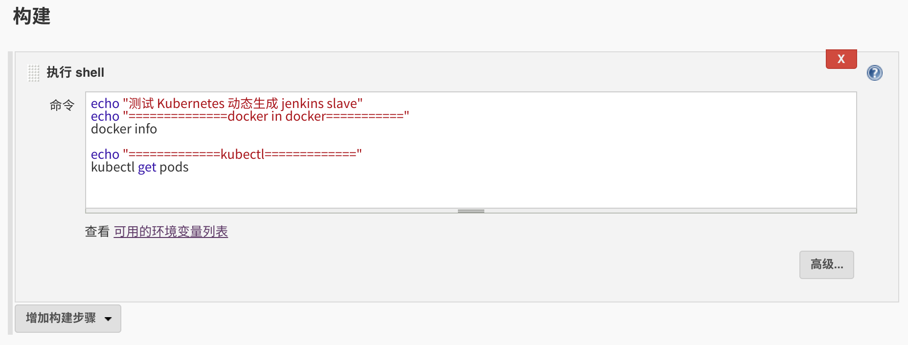</p>
<p>现在我们直接在页面点击左侧的 <code>Build now</code> 触发构建即可，然后观察 Kubernetes 集群中 Pod 的变化：
<pre class="highlight"><code class="language-shell">$ kubectl get pods -n kube-ops                        
NAME                                           READY   STATUS              RESTARTS   AGE
jenkins-68ccff445c-dk24f                       1/1     Running             0          12h
jnlp-1g893                                     0/1     ContainerCreating   0          83s</code></pre></p>
<p>我们可以看到在我们点击立刻构建的时候可以看到一个新的 Pod：jnlp-1g893 被创建了，这就是我们的 Jenkins Slave。任务执行完成后我们可以看到任务信息，比如我们这里是 花费了 21s 时间在 jnlp-1g893 这个 Slave上面</p>
<p>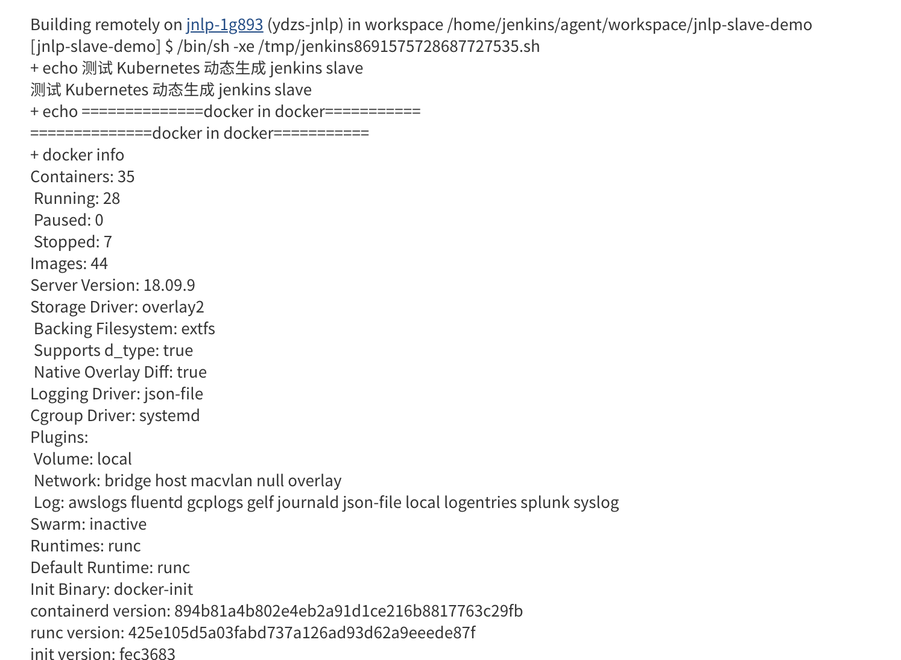</p>
<p>到这里证明我们的任务已经构建完成，然后这个时候我们再去集群查看我们的 Pod 列表，发现 kube-ops 这个 namespace 下面已经没有之前的 Slave 这个 Pod 了。</p>
<pre class="highlight"><code class="language-shell">$ kubectl get pods -n kube-ops                        
NAME                                           READY   STATUS              RESTARTS   AGE
jenkins-68ccff445c-dk24f                       1/1     Running             0          12h</code></pre>

<p>到这里我们就完成了使用 Kubernetes 动态生成 Jenkins Slave 的方法。</p>
<h2 id="jenkins-pipeline">Jenkins Pipeline<a class="headerlink" href="#jenkins-pipeline" title="Permanent link">&para;</a></h2>
<p>要实现在 Jenkins 中的构建工作，可以有多种方式，我们这里采用比较常用的 Pipeline 这种方式。Pipeline，简单来说，就是一套运行在 Jenkins 上的工作流框架，将原来独立运行于单个或者多个节点的任务连接起来，实现单个任务难以完成的复杂流程编排和可视化的工作。</p>
<p>Jenkins Pipeline 有几个核心概念：</p>
<ul>
<li>Node：节点，一个 Node 就是一个 Jenkins 节点，Master 或者 Agent，是执行 Step 的具体运行环境，比如我们之前动态运行的 Jenkins Slave 就是一个 Node 节点</li>
<li>Stage：阶段，一个 Pipeline 可以划分为若干个 Stage，每个 Stage 代表一组操作，比如：Build、Test、Deploy，Stage 是一个逻辑分组的概念，可以跨多个 Node</li>
<li>Step：步骤，Step 是最基本的操作单元，可以是打印一句话，也可以是构建一个 Docker 镜像，由各类 Jenkins 插件提供，比如命令：sh 'make'，就相当于我们平时 shell 终端中执行 make 命令一样。</li>
</ul>
<p>那么我们如何创建 Jenkins Pipline 呢？</p>
<ul>
<li>Pipeline 脚本是由 Groovy 语言实现的，但是我们没必要单独去学习 Groovy，当然你会的话最好</li>
<li>Pipeline 支持两种语法：Declarative(声明式)和 Scripted Pipeline(脚本式)语法</li>
<li>Pipeline 也有两种创建方法：可以直接在 Jenkins 的 Web UI 界面中输入脚本；也可以通过创建一个 Jenkinsfile 脚本文件放入项目源码库中</li>
<li>一般我们都推荐在 Jenkins 中直接从源代码控制(SCMD)中直接载入 Jenkinsfile Pipeline 这种方法</li>
</ul>
<p>我们这里来给大家快速创建一个简单的 Pipeline，直接在 Jenkins 的 Web UI 界面中输入脚本运行。</p>
<ul>
<li>新建 Job：在 Web UI 中点击 New Item -&gt; 输入名称：pipeline-demo -&gt; 选择下面的 Pipeline -&gt; 点击 OK</li>
<li>
<p>配置：在最下方的 Pipeline 区域输入如下 Script 脚本，然后点击保存。</p>
<pre class="highlight"><code class="language-groovy">node {
stage('Clone') {
    echo "1.Clone Stage"
}
stage('Test') {
    echo "2.Test Stage"
}
stage('Build') {
    echo "3.Build Stage"
}
stage('Deploy') {
    echo "4. Deploy Stage"
}
}</code></pre>

</li>
<li>
<p>构建：点击左侧区域的 <code>Build Now</code>，可以看到 Job 开始构建了</p>
</li>
</ul>
<p>隔一会儿，构建完成，可以点击左侧区域的 ·Console Output·，我们就可以看到如下输出信息：</p>
<p>console output 我们可以看到上面我们 Pipeline 脚本中的4条输出语句都打印出来了，证明是符合我们的预期的。</p>
<p>如果大家对 Pipeline 语法不是特别熟悉的，可以前往输入脚本的下面的链接 <code>Pipeline Syntax</code> 中进行查看，这里有很多关于 Pipeline 语法的介绍，也可以自动帮我们生成一些脚本。</p>
<h3 id="slave">在 Slave 中构建任务<a class="headerlink" href="#slave" title="Permanent link">&para;</a></h3>
<p>上面我们创建了一个简单的 Pipeline 任务，但是我们可以看到这个任务并没有在 Jenkins 的 Slave 中运行，那么如何让我们的任务跑在 Slave 中呢？还记得上节课我们在添加 Slave Pod 的时候，一定要记住添加的 label 吗？没错，我们就需要用到这个 label，我们重新编辑上面创建的 Pipeline 脚本，给 node 添加一个 label 属性，如下：
<pre class="highlight"><code class="language-groovy">node('haimaxy-jnlp') {
    stage('Clone') {
      echo "1.Clone Stage"
    }
    stage('Test') {
      echo "2.Test Stage"
    }
    stage('Build') {
      echo "3.Build Stage"
    }
    stage('Deploy') {
      echo "4. Deploy Stage"
    }
}</code></pre></p>
<p>我们这里只是给 node 添加了一个 <code>ydzs-jnlp</code> 这样的一个label，然后我们保存，构建之前查看下 kubernetes 集群中的 Pod：
<pre class="highlight"><code class="language-shell">$ kubectl get pods -n kube-ops
NAME                       READY     STATUS              RESTARTS   AGE
jenkins-7c85b6f4bd-rfqgv   1/1       Running             4          6d</code></pre></p>
<p>然后重新触发立刻构建：
<pre class="highlight"><code class="language-shell">$ kubectl get pods -n kube-ops
NAME                       READY     STATUS    RESTARTS   AGE
jenkins-7c85b6f4bd-rfqgv   1/1       Running   4          6d
jnlp-0hrrz                 1/1       Running   0          23s</code></pre></p>
<p>我们发现多了一个名叫jnlp-0hrrz的 Pod 正在运行，隔一会儿这个 Pod 就不再了：
<pre class="highlight"><code class="language-shell">$ kubectl get pods -n kube-ops
NAME                       READY     STATUS    RESTARTS   AGE
jenkins-7c85b6f4bd-rfqgv   1/1       Running   4          6d</code></pre></p>
<p>这也证明我们的 Job 构建完成了，同样回到 Jenkins 的 Web UI 界面中查看 Console Output，可以看到如下的信息：</p>
<p>pipeline demo2 是不是也证明我们当前的任务在跑在上面动态生成的这个 Pod 中，也符合我们的预期。我们回到 Job 的主界面，也可以看到大家可能比较熟悉的 Stage View 界面：</p>
<h3 id="kubernetes">部署 Kubernetes 应用<a class="headerlink" href="#kubernetes" title="Permanent link">&para;</a></h3>
<p>上面我们已经知道了如何在 Jenkins Slave 中构建任务了，那么如何来部署一个原生的 Kubernetes 应用呢？ 要部署 Kubernetes 应用，我们就得对我们之前部署应用的流程要非常熟悉才行，我们之前的流程是怎样的：</p>
<ul>
<li>编写代码</li>
<li>测试</li>
<li>编写 Dockerfile</li>
<li>构建打包 Docker 镜像</li>
<li>推送 Docker 镜像到仓库</li>
<li>编写 Kubernetes YAML 文件</li>
<li>更改 YAML 文件中 Docker 镜像 TAG</li>
<li>利用 kubectl 工具部署应用</li>
</ul>
<p>我们之前在 Kubernetes 环境中部署一个原生应用的流程应该基本上是上面这些流程吧？现在我们就需要把上面这些流程放入 Jenkins 中来自动帮我们完成(当然编码除外)，从测试到更新 YAML 文件属于 CI 流程，后面部署属于 CD 的流程。如果按照我们上面的示例，我们现在要来编写一个 Pipeline 的脚本，应该怎么编写呢？
<pre class="highlight"><code class="language-groovy">node('ydzs-jnlp') {
    stage('Clone') {
      echo "1.Clone Stage"
    }
    stage('Test') {
      echo "2.Test Stage"
    }
    stage('Build') {
      echo "3.Build Docker Image Stage"
    }
    stage('Push') {
      echo "4.Push Docker Image Stage"
    }
    stage('YAML') {
      echo "5.Change YAML File Stage"
    }
    stage('Deploy') {
      echo "6.Deploy Stage"
    }
}</code></pre></p>
<p>现在我们创建一个流水线的作业，直接使用上面的脚本来构建，同样可以得到正确的结果：</p>
<p>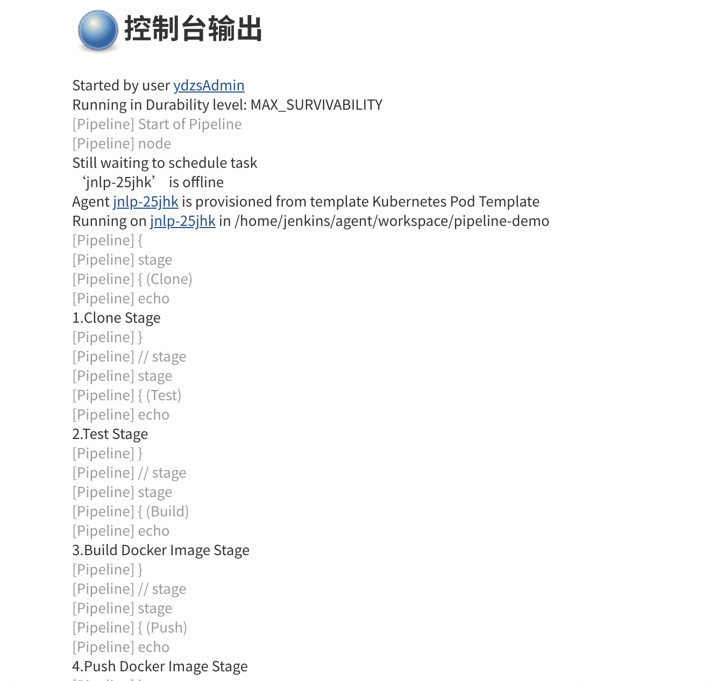</p>
<p>这里我们来将一个简单 golang 程序，部署到 kubernetes 环境中，代码链接：<a href="https://github.com/cnych/gitlab-ci-k8s-demo">https://github.com/cnych/gitlab-ci-k8s-demo</a>。我们将代码推送到我们自己的 GitLab 仓库上去，地址：<a href="http://git.k8s.local/course/go-ops-demo">http://git.k8s.local/course/go-ops-demo</a>，这样让 Jenkins 和 Gitlab 去进行连接进行 CI/CD。</p>
<p>如果按照之前的示例，我们是不是应该像这样来编写 Pipeline 脚本：</p>
<p>第一步，clone 代码，这个没得说吧
第二步，进行测试，如果测试通过了才继续下面的任务
第三步，由于 Dockerfile 基本上都是放入源码中进行管理的，所以我们这里就是直接构建 Docker 镜像了
第四步，镜像打包完成，就应该推送到镜像仓库中吧
第五步，镜像推送完成，是不是需要更改 YAML 文件中的镜像 TAG 为这次镜像的 TAG
第六步，万事俱备，只差最后一步，使用 kubectl 命令行工具进行部署了</p>
<p>到这里我们的整个 CI/CD 的流程是不是就都完成了。我们同样可以用上面的我们自定义的一个 jnlp 的镜像来完成我们的整个构建工作，但是我们这里的项目是 golang 代码的，构建需要相应的环境，如果每次需要特定的环境都需要重新去定制下镜像这未免太麻烦了，我们这里来采用一种更加灵活的方式，自定义 podTemplate。我们可以直接在 Pipeline 中去自定义 Slave Pod 中所需要用到的容器模板，这样我们需要什么镜像只需要在 Slave Pod Template 中声明即可，完全不需要去定义一个庞大的 Slave 镜像了。</p>
<p>首先去掉 Jenkins 中 kubernetes 插件中的 Pod Template 的定义，Jenkins -&gt; 系统管理 -&gt; 系统设置 -&gt; 云 -&gt; Kubernetes区域，删除下方的Kubernetes Pod Template -&gt; 保存。</p>
<p>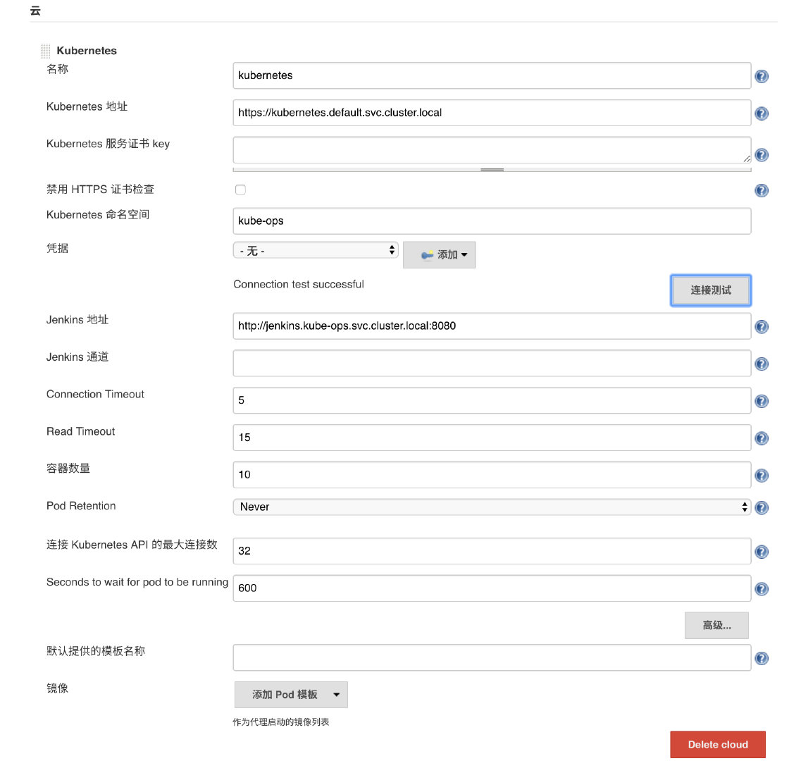</p>
<p>然后新建一个名为 go-ops-demo 类型为流水线(Pipeline)的任务：</p>
<p>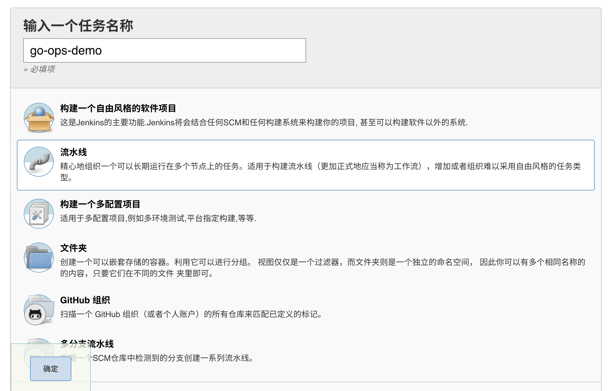</p>
<p>然后在这里需要勾选触发远程构建的触发器，其中令牌我们可以随便写一个字符串，然后记住下面的 URL，将 JENKINS_URL 替换成 Jenkins 的地址,我们这里的地址就是：<code>http://jenkins.k8s.local/job/go-ops-demo/build?token=server321</code></p>
<p>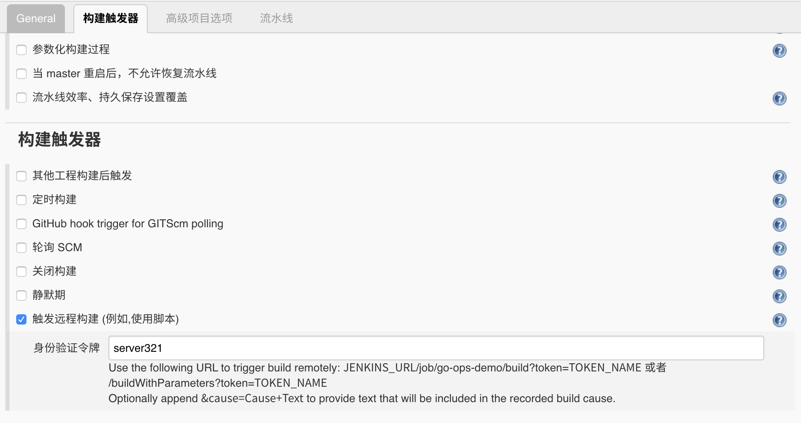</p>
<p>然后在下面的流水线区域我们可以选择<code>Pipeline script</code>然后在下面测试流水线脚本，我们这里选择<code>Pipeline script from SCM</code>，意思就是从代码仓库中通过 <code>Jenkinsfile</code> 文件获取 <code>Pipeline script</code> 脚本定义，然后选择 SCM 来源为 Git，在出现的列表中配置上仓库地址 <code>http://git.k8s.local/course/go-ops-demo.git</code>，由于我们是在一个 Slave Pod 中去进行构建，所以如果使用 SSH 的方式去访问 Gitlab 代码仓库的话就需要频繁的去更新 SSH-KEY，所以我们这里采用直接使用用户名和密码的形式来方式：</p>
<p>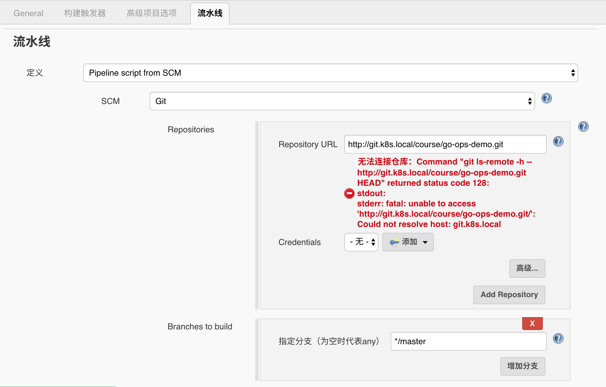</p>
<p>在 <code>Credentials</code> 区域点击添加按钮添加我们访问 Gitlab 的用户名和密码：</p>
<p>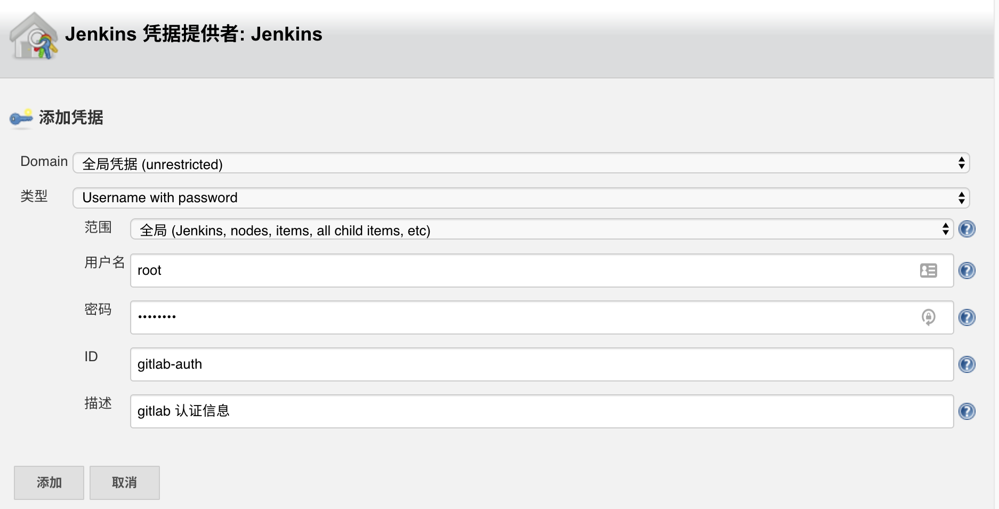</p>
<p>然后需要我们配置用于构建的分支，如果所有的分支我们都想要进行构建的话，只需要将<code>Branch Specifier</code>区域留空即可，一般情况下不同的环境对应的分支才需要构建，比如 master、develop、test 等，平时开发的 feature 或者 bugfix 的分支没必要频繁构建，我们这里就只配置 master 和 develop 两个分支用户构建。</p>
<p>另外还需要注意的是，由于我们这里的 Gitlab 的主域名 <code>git.k8s.local</code> 是一个自定义的域名，所以我们可以看到上面实际上根本就解析不到这个地址，这个时候我们可以通过 CoreDNS 来增加解析，我们只需要解析到运行有 Ingress Controller 的节点即可：
<pre class="highlight"><code class="language-shell">$ kubectl edit cm coredns -n kube-system
apiVersion: v1
data:
  Corefile: |
    .:53 {
        errors
        health
        hosts {  # 添加对 gitlab、harbor、jenkins 的解析
          10.151.30.11 git.k8s.local jenkins.k8s.local core.harbor.domain
          fallthrough
        }
        kubernetes cluster.local in-addr.arpa ip6.arpa {
           pods insecure
           upstream
           fallthrough in-addr.arpa ip6.arpa
        }
        prometheus :9153
        proxy . /etc/resolv.conf
        cache 30
        reload
    }
kind: ConfigMap
metadata:
  creationTimestamp: "2019-11-08T11:59:49Z"
  name: coredns
  namespace: kube-system</code></pre></p>
<p>编辑完成后，这个时候 Jenkins 就可以正常访问到 GitLab 了。</p>
<p>然后前往 Gitlab 中配置项目 go-ops-demo 的 Webhook，settings -&gt; Integrations，填写上面得到的 trigger 地址：</p>
<p>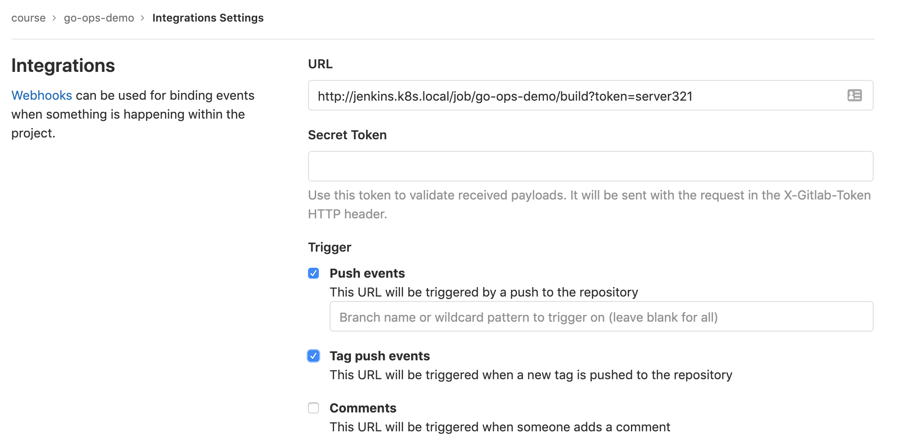</p>
<p>保存后，如果出现 <code>Url is blocked: Requests to the local network are not allowed</code> 这样的报警信息，则需要进入 GitLab Admin -&gt; Settings -&gt; NetWork -&gt; 勾选 Outbound requests，然后重新配置即可。</p>
<p>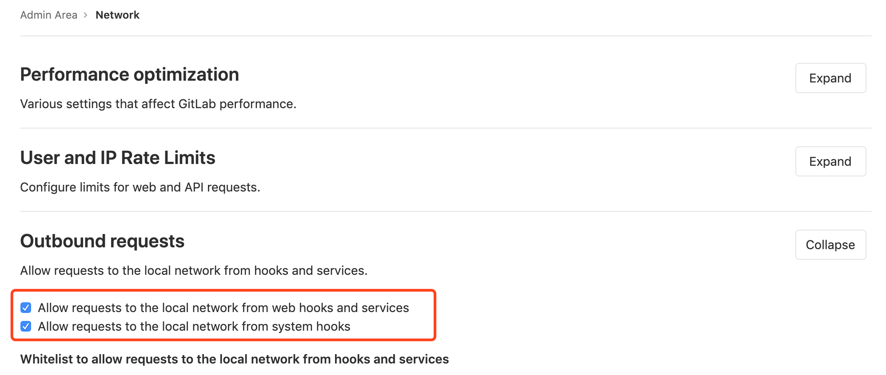</p>
<p>保存后，可以直接点击Test -&gt; Push Event测试是否可以正常访问 Webhook 地址，这里需要注意的是我们需要配置下 Jenkins 的安全配置，否则这里的触发器没权限访问 Jenkins，系统管理 -&gt; 全局安全配置：取消防止跨站点请求伪造，勾选上匿名用户具有可读权限：</p>
<p>保存后，可以直接点击 <code>Test -&gt; Push Event</code> 测试是否可以正常访问 Webhook 地址，这里需要注意的是我们需要配置下 Jenkins 的安全配置，否则这里的触发器没权限访问 Jenkins，系统管理 -&gt; 全局安全配置：取消防止跨站点请求伪造，勾选上匿名用户具有可读权限：</p>
<p>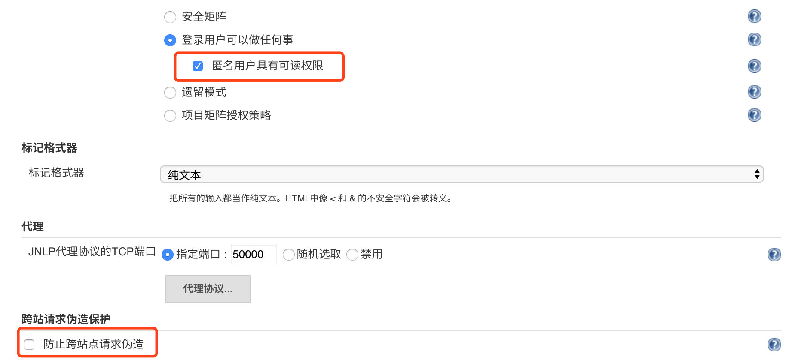</p>
<p>如果测试出现了 <code>Hook executed successfully: HTTP 201</code> 则证明 Webhook 配置成功了，否则就需要检查下 Jenkins 的安全配置是否正确了。</p>
<p>配置成功后我们只需要往 Gitlab 仓库推送代码就会触发 Pipeline 构建了。接下来我们直接在代码仓库根目录下面添加 <code>Jenkinsfile</code> 文件，用于描述流水线构建流程。</p>
<p>首先定义最简单的流程，要注意这里和前面的不同之处，这里我们使用 <code>podTemplate</code> 来定义不同阶段使用的的容器，有哪些阶段呢？
<pre class="highlight"><code>Clone 代码 -&gt; 单元测试 -&gt; Golang 编译打包 -&gt; Docker 镜像构建/推送 -&gt; Kubectl 部署服务。</code></pre></p>
<p>Clone 代码在默认的 Slave 容器中即可；单元测试我们这里直接忽略，有需要这个阶段的同学自己添加上即可；Golang 编译打包肯定就需要 Golang 的容器了；Docker 镜像构建/推送是不是就需要 Docker 环境了呀；最后的 Kubectl 更新服务是不是就需要一个有 Kubectl 的容器环境了，所以我们这里就可以很简单的定义 <code>podTemplate</code> 了，如下定义：</p>
<pre class="highlight"><code class="language-groovy">def label = "slave-${UUID.randomUUID().toString()}"

podTemplate(label: label, containers: [
  containerTemplate(name: 'golang', image: 'golang:1.12.0-alpine3.9', command: 'cat', ttyEnabled: true),
  containerTemplate(name: 'docker', image: 'docker', command: 'cat', ttyEnabled: true),
  containerTemplate(name: 'kubectl', image: 'cnych/kubectl', command: 'cat', ttyEnabled: true)
], serviceAccount: 'jenkins', volumes: [
  hostPathVolume(mountPath: '/home/jenkins/.kube', hostPath: '/root/.kube'),
  hostPathVolume(mountPath: '/var/run/docker.sock', hostPath: '/var/run/docker.sock')
]) {
  node(label) {
    def myRepo = checkout scm
    def gitCommit = myRepo.GIT_COMMIT
    def gitBranch = myRepo.GIT_BRANCH

    stage('单元测试') {
      echo "测试阶段"
    }
    stage('代码编译打包') {
      container('golang') {
        echo "代码编译打包阶段"
      }
    }
    stage('构建 Docker 镜像') {
      container('docker') {
        echo "构建 Docker 镜像阶段"
      }
    }
    stage('运行 Kubectl') {
      container('kubectl') {
        echo "查看 K8S 集群 Pod 列表"
        sh "kubectl get pods"
      }
    }
  }
}</code></pre>

<p>直接在 <code>podTemplate</code> 里面定义每个阶段需要用到的容器，volumes 里面将我们需要用到的 docker.sock 文件和 kubeconfig 文件也挂载到 Pod 中来，特别的我们使用的 label 标签是是一个随机生成的，这样有一个好处就是有多个任务来的时候就可以同时构建了，然后我们直接将 Jenkinsfile 文件提交到 GitLab 代码仓库中，正常来说就可以触发 Jenkins 的构建了：
<pre class="highlight"><code class="language-shell">$ kubectl get pods -n kube-ops
NAME                                                     READY   STATUS              RESTARTS   AGE
jenkins-68ccff445c-dk24f                                 1/1     Running             0          14h
slave-5dc89808-76f8-418f-ad31-ec34175aa192-5tmwz-2sdm8   0/4     ContainerCreating   0          3s</code></pre></p>
<p>我们可以看到生成的 slave Pod 包含了4个容器，就是我们在 podTemplate 指定的加上 slave 的镜像，运行完成后该 Pod 也会自动销毁。</p>
<p>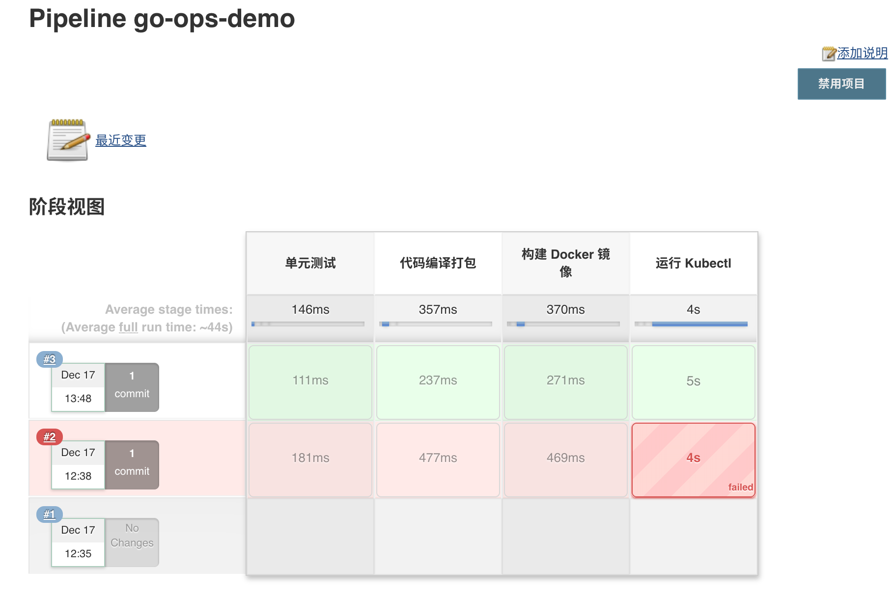</p>
<h4 id="pipeline">Pipeline<a class="headerlink" href="#pipeline" title="Permanent link">&para;</a></h4>
<p>接下来的工作就是来实现上面具体的 Pipeline 脚本了。</p>
<p>第一个阶段：单元测试，我们可以在这个阶段是运行一些单元测试或者静态代码分析的脚本，我们这里直接忽略。</p>
<p>第二个阶段：代码编译打包，我们可以看到我们是在一个 golang 的容器中来执行的，所以我们只需要在该容器中获取到代码，然后在代码目录下面执行 golang 编译打包命令即可，如下所示：
<pre class="highlight"><code class="language-groovy">stage('代码编译打包') {
    try {
        container('golang') {
            echo "2.代码编译打包阶段"
            sh "make build"
        }
    } catch (exc) {
        println "构建失败 - ${currentBuild.fullDisplayName}"
        throw(exc)
    }
}</code></pre></p>
<p>第三个阶段：构建 Docker 镜像，要构建 Docker 镜像，就需要提供镜像的名称和 tag，要推送到 Harbor 仓库，就需要提供登录的用户名和密码，所以我们这里使用到了 <code>withCredentials</code> 方法，在里面可以提供一个 <code>credentialsId</code> 为 <code>dockerhub</code> 的认证信息，如下：
<pre class="highlight"><code>stage('构建 Docker 镜像') {
  withCredentials([[$class: 'UsernamePasswordMultiBinding',
    credentialsId: 'dockerhub',
    usernameVariable: 'DOCKER_HUB_USER',
    passwordVariable: 'DOCKER_HUB_PASSWORD']]) {
      container('docker') {
        echo "3. 构建 Docker 镜像阶段"
        sh """
          docker login ${dockerRegistryUrl} -u ${DOCKER_HUB_USER} -p ${DOCKER_HUB_PASSWORD}
          docker build -t ${image}:${imageTag} .
          docker push ${image}:${imageTag}
          """
      }
  }
}</code></pre></p>
<p>其中 ${image} 和 ${imageTag} 我们可以在上面定义成全局变量：
<pre class="highlight"><code class="language-shell">def imageTag = sh(script: "git rev-parse --short HEAD", returnStdout: true).trim()
def dockerRegistryUrl = "core.harbor.domain"
def imageEndpoint = "course/go-ops-demo"
def image = "${dockerRegistryUrl}/${imageEndpoint}"</code></pre></p>
<p>docker 的用户名和密码信息则需要通过凭据来进行添加，进入 jenkins 首页 -&gt; 左侧菜单凭据 -&gt; 添加凭据，选择用户名和密码类型的，其中 ID 一定要和上面的 <code>credentialsId</code> 的值保持一致：</p>
<p>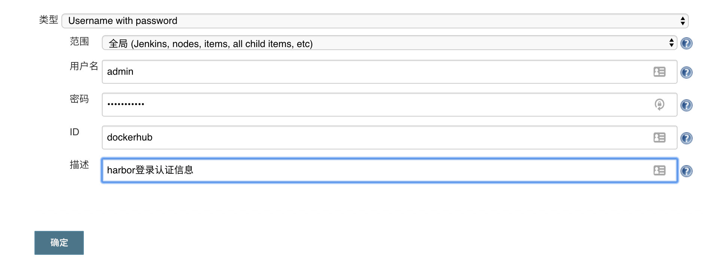</p>
<p>第四个阶段：运行 kubectl 工具，其实就是把 YAML 资源清单文件中的参数进行替换：
<pre class="highlight"><code>stage('运行 Kubectl') {
    container('kubectl') {
        echo "4.修改 YAML 文件参数"
        def ciEnv = "dev"
        if (gitBranch == "origin/master") {
            ciEnv = "prod"
        }
        sh "sed -i 's/__IMAGE__/${image}' manifests/deployment.yaml"
        sh "sed -i 's/__VERSION__/${imageTag}' manifests/deployment.yaml"
        sh "sed -i 's/__CI_ENV__/${ciEnv}' manifests/deployment.yaml manifests/service.yaml manifests/ingress.yaml"
        echo "5.部署应用到 K8S"
        sh "kubectl apply -f manifests/deployment.yaml"
        sh "kubectl apply -f manifests/service.yaml"
        sh "kubectl apply -f manifests/ingress.yaml"
        sh "kubectl rollout status -f manifests/deployment.yaml"
        echo "6.部署成功"
    }
}</code></pre></p>
<p>我们代码仓库的 YAML 文件使用的镜像是用标签代替的：<code>__IMAGE:__VERSION__</code>，这是因为我们的镜像地址是动态的，依赖我们在上一个阶段打包出来的镜像地址的，所以我们这里用标签代替。另外由于我们这里使用的是私有镜像仓库，所以需要在集群中提前创建一个对应的 Secret 对象：
<pre class="highlight"><code class="language-shell">$ kubectl create secret docker-registry myregistry --docker-server=core.harbor.domain --docker-username=DOCKER_USER --docker-password=DOCKER_PASSWORD --docker-email=DOCKER_EMAIL --namespace course</code></pre></p>
<p>我们在代码根目录下面创建一个 manifests 的目录，用来存放资源清单文件，正常来说是不是我们只需要在镜像构建成功后，将资源清单文件中的镜像标签替换掉就 OK，然后直接直接用 kubectl 部署应用。</p>
<p>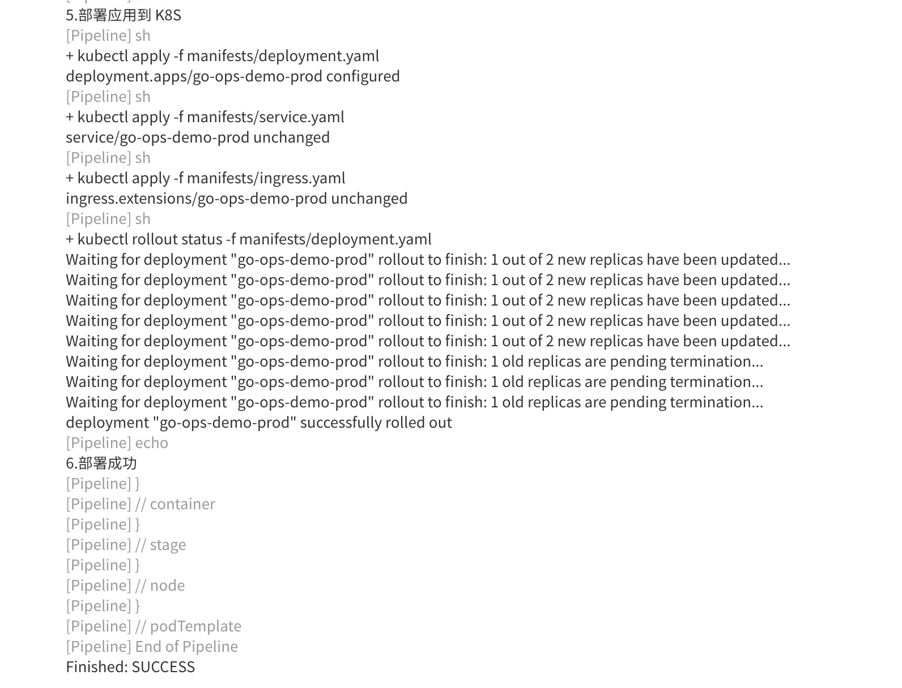</p>
<p>部署成功后，我们可以前往 Kubernetes 集群查看应用状态：
<pre class="highlight"><code class="language-shell">$ kubectl get pods -n course                                
NAME                               READY   STATUS    RESTARTS   AGE
go-ops-demo-prod-5cbf7444f-bshkl   1/1     Running   0          2m8s
go-ops-demo-prod-5cbf7444f-rx2t6   1/1     Running   0          2m23s</code></pre></p>
<p>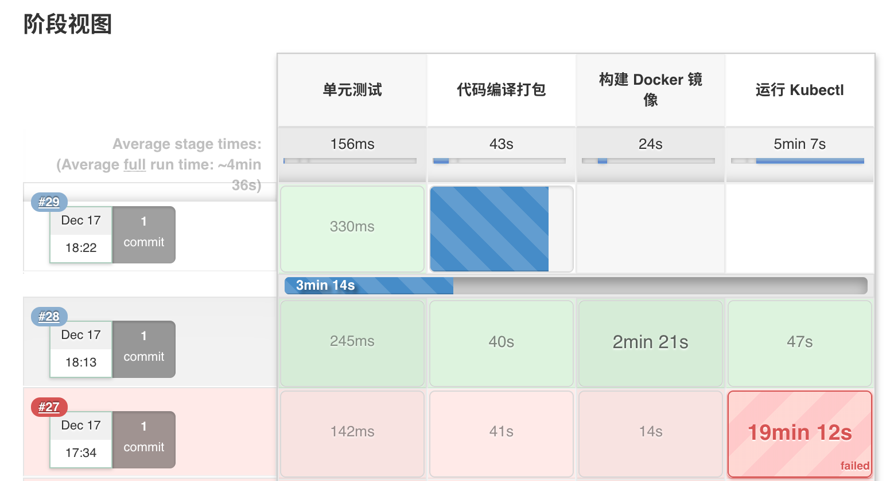</p>
<p>然后我们可以在本地 <code>/etc/hosts</code> 里面加上 <code>http://go-ops-demo.prod.k8s.local</code> 的的映射，这样我们就可以通过这个域名来访问我们安装的应用了：</p>
<p>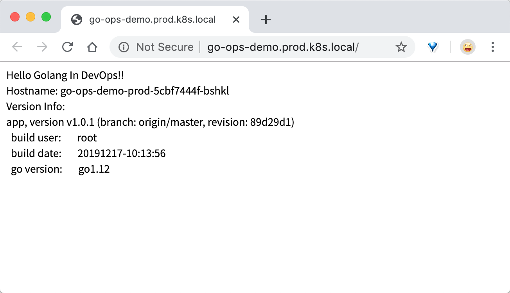</p>
<p>当然我们还可以去做一些必要的判断工作，比如根据分支判断是否需要自动部署等等，我们也可以尝试去修改下代码然后提交看是否会进行自动化构建和部署。</p>
                
                  
                
              
              
                


              
            </article>
          </div>
        </div>
      </main>
      


<!-- Application footer -->
<footer class="md-footer">

    <!-- Further information -->
    <div class="md-footer-meta md-typeset">
        <div class="md-footer-meta__inner md-grid">

            <!-- Copyright and theme information -->
            <div class="md-footer-copyright">
                
                <div class="md-footer-copyright__highlight">
                    Copyright &copy; 2020 Kubernetes技术栈
                </div>
                
                powered by
                <a href="https://www.k8stech.net" title="Kubernetes技术栈">www.k8stech.net</a>
            </div>

            <!-- Social links -->
            
            
            
        </div>
    </div>
</footer>


    </div>
    
      <script src="../../assets/javascripts/application.d9aa80ab.js"></script>
      
        
        
          
          <script src="../../assets/javascripts/lunr/lunr.stemmer.support.js"></script>
          
            
              
                <script src="../../assets/javascripts/lunr/tinyseg.js"></script>
              
              
                <script src="../../assets/javascripts/lunr/lunr.jp.js"></script>
              
            
          
          
        
      
      <script>app.initialize({version:"1.0.4",url:{base:"../.."}})</script>
      
        <script src="../../assets/js/hljs/highlight.pack.js"></script>
      
        <script src="../../assets/js/prism.js"></script>
      
    
  </body>
</html>